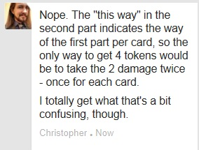

64 posts · 6048 views · started 2014-02-17 04:51 UTC
PH
phantaskippy
2014-02-17 04:51 UTC
#1
What this post isn't:
An attempt to find a "Best" strategy for Setback.
Arguing over how he should be played.
any other type of arguing or complaining.
What this post is:
Discussing your favorite cool things to pull off with Setback, and which cards you tend to set yourself up for. (there really are a lot of options)
Mine:
I lean towards searching for Wrong time and place, using uncharmed when I can't get it, and keeping my tokens high enough to fuel a turn of events (I get really mad if I can't fund that card) I also use cash out a lot to burn my deck until I get wrong place and time, then everything is about tokens to fuel those awesome redirects.
1 question on Wrong Place and Time: If Legacy had Superhuman and Fortitude out and was going to get hit for 5 damage, it would be reduced to 1. Wrong Place and Time would only require 1 token to redirect the 5 damage, right? Just like how Fixer with Wrench and Mantis and Shielding winds from Tempest can use mantis to redirect a 5 damage shot.
RO
Ronway
2014-02-17 05:10 UTC
#2
I enjoy getting Looking Up into paly as early as possible, along High Risk Behavior. Typically I keep my Unlucky Pool below 10, until I get a Silver Lining, in which case I just playing anything that adds tokens to my pool. Then when I will probably get incapped before my next turn, I let loose a Cause And Effect. Currently my post receiving the official copy is a 27 pool, with both High Risk Behaviors in play. That's an awesome total of 45 damage, then coming right back with 27 HP, then following it up with a power that dealt an additional 5 points of damage.
Something else that I have done, but don't usually aim for it. Getting both High Risk Behaviors and Surprising Fortune. Allowing the High Risk to fuel the discarding every turn, keeping it under 3 tokens, thus no bonus damage. Getting Friendly Fire out if Setback is later in the turn order helps as well, that way he can use his One-Shots that remove tokens without taking too much damage.
CH
Chaosmancer
2014-02-17 14:26 UTC
#3
My gut tells me no, because if memory serves if you don't have the tokens to redirect it hits setback instead, and he would be taking 5 damage as he has no DR. Actually, I think it is simply the total damage before DR = the cost in tokens
MC
McBehrer
2014-02-17 22:48 UTC
#4
Well, it's pay the tokens OR redirect it to Setback. So, you determine how much damage it is to THAT target (1 in this case,) and if you don't pay it it redirects to Setback and becomes 5. If you do pay the 1 it redirects to whoever... and becomes 5.
ZA
Zalrus9
2014-02-17 23:13 UTC
#5
How does you guy's strategy change with Dark Watch Setback? He trades a bit of his setting up for a pseudo-healing thing. Has anybody tried him yet?
I haven't played a lot of Setback, but when I do, It usually involves getting to Looking Up as quickly as possible and then using it to play all the unlucky-reliant cards I can. My strategy will likely change when I have more experience.
MC
McBehrer
2014-02-17 23:26 UTC
#6
I don't use Dark Watch Setback. Ever.
AM
Ameena
2014-02-17 23:49 UTC
#7
I've only played Setback twice so far, and I couldn't really get a strategy for him - mostly I'd just play a card that looked okay and then use his base power to gain a token and then put out something random. The "if you have seven or more Unlucky points, spend seven of them and hit something for that much damage" is pretty satisfying, and I think there were a few other cards I kinda liked.
What I really like, though,is pretty much all of his fluff text and a lot of the pics that go with them :).
RA
Rabit
2014-02-18 00:02 UTC
#8
One of our friends now has that opinion, also.
I haven't had many opportunities to play Setback (said friend loves him and plays him often), but I did get to play DW Setback the other day. Mostly because of the deal, I was always low on point and immediately using every point I would get to do something cool. The highest I got was 5, and I immediatley played Turn of Events to use them all up.
But I was always reducing the next damage someone was taking, because even if I didn't have any token in my Unlucky pool, I could still use my base power. It was great!
I kind feel that way about him, in general. I'll play to the cards I end up with and deal with the situations that come up; I tend not to play Setback with a specific strategy. When I've played him, it's worked out pretty well.
Yeah, the thematic aspects of Setback are just awesome!
MC
McBehrer
2014-02-18 00:45 UTC
#9
Wrong Time and Place is by far my favorite card in the game, thematically. Especially the way it was before they made the start of turn shuffle-back-into-your-deck optional, and when it redirected ALL damage to Setback, rather than the first each turn. The way it pops up unexpectedly -- coupled with the picture of the exact thing happening to Revenant and Setback -- to inconvenience you and then shuffles back into the deck to haunt you again later is pure mechanics GENIUS. Plus the flavor text... "YOU AGAIN!?" -Setback and Revenant (towards each other), and the player (towards the card itself).
PH
phantaskippy
2014-02-18 01:50 UTC
#10
Why did it get changed, anything broken or it just wasn't what they wanted, because that honestly sounds really fun. I might play it that way.
And thanks for answering, I figured from the way it was worded, but wasn't sure.
MC
McBehrer
2014-02-18 02:07 UTC
#11
Well, it usually got Setback killed, and in order to consistently use it you had to have MASSIVE stockpiles of tokens. Once per turn is much more manageable.
As for the shuffle being optional, that plays into it being less suicidal of a play; now that it's not instant death to play it, you might actually want to keep it around a bit.
PH
phantaskippy
2014-02-18 02:31 UTC
#12
Some people just don't appreciate dying awesomely.
DA
danmarshall14
2014-02-18 15:12 UTC
#13
So far, I've used Setback twice and I just can't seem to get him to work. I know that a lot of that is due to lack of experience; it took me several tries to come around to Nightmist and AA who are now amongst my favorites. But, as of last night, both of my games have resulted in Setback dying pretty quickly or just not being able to do much (read: unlucky).
That being said, I'm interested in reading through this thread; I hope to get some good ideas in how to play him better.
MC
McBehrer
2014-02-18 16:10 UTC
#14
For me, the best key to winning with Setback is not having a strategy. He's too unreliable -- albeit super flexible to compensate -- for you to consistently decide on a course of action at the start of the game and stick to it the whole time. You can't be afraid to fluctuate. He's all about building up tokens and then spending them, and then building up again. Then again, here are some things I do.
1: if you're going to spend a bunch of tokens, try to leave yourself at 1 before using risk; that way, if you topdeck Plucky Break, you'll get to deal the 2 damage and draw a card, but also regain 3 hp. Always helpful.
2: If you're going for middle amounts, try to aim for H plus 1. That way you can play Turn of Events, benefit from that, and still have the 1 left over to Risk a Plucky Break.
3: Risking is fun. You should do it. You can NOT play conservatively if you are Setback. functionally, he HAS to take risks and hurt himself to be effective.
LY
lynkfox
2014-02-18 17:12 UTC
#15
Yeah ill gladly build up dozens of tokens with HIgh Risk Behavior and prepare for kharmic retributions and great big Silver Linings.
I too have found that just playing fast and loose and rolling with the punches makes the best set up for him
MC
McBehrer
2014-02-18 20:13 UTC
#16
Also, cards like Friendly Fire and High-Risk Behavior double stack, due to him having NO LIMITED CARDS, so making use of those is fun times.
PH
phantaskippy
2014-02-19 01:09 UTC
#17
Wouldn't the "Each time he is dealt" apply?
If there are two cards telling you to give him 2 tokens, wouldn't they both activate?
MC
McBehrer
2014-02-19 01:48 UTC
#18
That's what I was thinking.
RO
Ronway
2014-02-19 01:55 UTC
#19
I'm not sure what point is trying to be made. There is nothing on the card that says "Each time he is dealt".
MC
McBehrer
2014-02-19 02:04 UTC
#20
"If he is dealt damage this way."
"This way" being infered to be shorthand for "by the effects of Friendly Fire."
PH
phantaskippy
2014-02-19 02:10 UTC
#21
The same way that if 2 Informants are in play the top 2 cards of the villain deck get played everytime you play a card, with 2 friendly fire in play if setback is dealt damage by friendly fire he would get 2 tokens twice (4 tokens).
That's why it would make a difference.
MC
McBehrer
2014-02-19 02:18 UTC
#22
And would you QUIT with the douchey sarcasm? It's REALLY getting old.
RO
Ronway
2014-02-19 02:19 UTC
#23
Are you saying that if you choose to take damage from one copy of Friendly Fire and not the other, you will be able to gain 4 tokens? I really don't think that it is worded to work that way. There is no evidence that says that a second copy of Friendly Fire will trigger from the first copies text. "This way" even suggests that it only triggers based on the copy the text originates on.
DO
Donner
2014-02-19 02:48 UTC
#24
You could double the damage you take, though and get 4 tokens...right?
RE
Reckless
2014-02-19 02:50 UTC
#25
With your avatar and the way Setback's bio is presented, I honestly felt like you were Pete Riske for a bit!
I'd assume that it'd trigger from both of them, but I'm no expert on mechanics.
MC
McBehrer
2014-02-19 02:55 UTC
#26
Yeah, but if they only hit 1 non-hero target you couldn't double the damage unless you had 2 out. I'll admit, I was a little shaky on the ruling for the double-token thing there; I mostly just WANTED it to be true.
OD
oddthomas
2014-02-19 02:57 UTC
#27
I will say that I've used Dark Watch Setback quite a bit and I have to say it works out very well. Now with that being said though "Risk" is much more fun and allows for a bit more options.
PH
phantaskippy
2014-02-19 04:21 UTC
#28
It doesn't say anything restricting it to the effect of one card or the other.
If Setback takes the damage the requirements for both statements that reward him with tokens will have been met.
"This way" refers to setback taking that damage, it can happen multiple times in a turn, I would think if you took the damage twice you would get 4 tokens.
I don't have the card in front of me, but I think it works that way.
DO
Donner
2014-02-19 06:02 UTC
#29
Thanks! That comment made my day.
RO
Ronway
2014-02-19 13:03 UTC
#30
Now i'm even more confused. Are you saying that you are taking 4 damage to get 4 tokens, or 2 damage to get 4 tokens?
FO
Foote
2014-02-19 13:46 UTC
#31
I'm 100% with Ronway on this guys.
Cards resolve one at a time. Just because two cards share the same trigger (doesnt matter if its the same card or not), they get resolved individually, in the order of the players choice.Two Friendly Fire's in play, he would need to take two instances of damage to get two sets of tokens.
PH
phantaskippy
2014-02-19 14:11 UTC
#32
Why? You don't have to play two cards for two Informants to play two villain cards.
Whenever Setback is dealt damage this way, add 2 tokens to your unlucky pool.
Why I think they stack:
1. The above effect is a seperate line. It is not a part of the line about dealing the damage. They are seperate effects.
2. "This Way" refers to the activation of Friendly Fire's first effect.
3. That effect, once tirggered would meet the criteria for both copies of Friendly fire.
4. There is no wording in the second effect that limits its reaction to the result of the card it is preinted on.
To meet the requirements for Setback to add 2 tokens he has to take damage from another hero choosing to use the first effect on the card to also deal damage to Setback, and have that damage succeed in lowering Setback's HP. It does not require that the hero use the same card for both effects.
FO
Foote
2014-02-19 14:28 UTC
#33
I totally see what you are saying. But for me, it's in your #2. "This way" does refer to the activation of Friendly Fire, but it also restricts it to "that specific" Friendly Fire and not all Friendly Fire's that might be in play.
This is a bad example I understand, but use it as a thought experiment. If Tachyon could have two Pushing the Limits in play, I'd think that by taking the start of turn damage for one would not satisfy the damage requirment of the second. It is taking damage "this way" from "this card", not taking damage "this way" from "all similar cards".
BR
Braithwhite
2014-02-19 14:38 UTC
#34
I'm with skippy on this one.
Cards may resolve one at a time, but we have a somewhat unique situation in that the cards (to be resolved) are the same, with the same trigger.
Because each card says "in this fashion", each gives 2 tokens when he gets zapped by a friendly. So 4 tokens/instance of damage.
I'd say a case could be made that you could take two instances of damage (1 per copy of Friendly fire) and get 4 tokens each time (for 8 total).
...Setback!
MA
Matchstickman
2014-02-19 14:45 UTC
#35
I'm with Ronway and Foote here, Pushing the Limits is an excellent example, as are any of the other cards that recently acquired eratta.
If you skip your turn to put a card under Self-Destruct Sequence you don't also get to activate any other skip your turn effects just because you happened to skip your turn while they were out, you need to "pay the cost" for each thing individually.
The Informant I see as being different because you're not paying a cost, it's a trigger, there's no choice involved, it happens whether you want it or not, not so with Setback (or PtL, Solar Flare etc).
FO
Foote
2014-02-19 14:53 UTC
#36
Ok. Counter-example then. CHASTISE!
"At the start of your turn, Fanatic may deal herself 2 damage. If she takes no damage this way, this card is destroyed"
So if Fanatic has two Chastise in play, she only needs to take the 2 damage once to keep both out? Thats what you are saying. If you agree to one, you have to agree to the other.
The phase "this way" restricts it to "this card". Friendly Fire is the same.
BR
Braithwhite
2014-02-19 14:55 UTC
#37
I do agree with that, and would agree that if Tachyon had 2 copies of pushing th elimits, she could keep them both by paying the cost once.
OD
oddthomas
2014-02-19 14:56 UTC
#38
This is part of the reason I asked for this card to be a limited card.
I have to agree with foote and ronway here.
With that being said though I think a general rule is settle any grey areas within your group. I will continue to play it the same way I always have and so should you.
PH
phantaskippy
2014-02-19 15:04 UTC
#39
Pushing the limits, Solar Flare, Embolden, Chastise. . .
The difference between those effects and friendly fire is:
1. They are part of the same line of text. They are one effect.
2. "This Way" refers to the first part of the same line of text, not a seperate effect.
3. They all say "this card" in the effect. They limit the interaction of the effect to the card the text is printed on.
None of those are true in Friendly Fire's case.
MA
Matchstickman
2014-02-19 15:08 UTC
#40
If you can pay multiple "costs" with a single payment, the Scholar's Elemental cards just got ridiculously powerful!
I can discard 1 card to satisfy ALL the Elements out there, I'm getting all 9 out with no problems from now on!
RO
Ronway
2014-02-19 15:20 UTC
#41
Typically if having multiple copies of the same card in play increases the effects, they use "x", as in "Whenever Setback is dealt damage this way, add X tokens to your unlucky pool. Where X = the number of Friendly Fires in play times 2."
BR
Braithwhite
2014-02-19 15:22 UTC
#42
Ok, thats a fair cop. I'm wrong about cards that require a payment for upkeep.
I do think that skippy is in the right about friendly fire, though.
FO
Foote
2014-02-19 15:31 UTC
#43
Totally Irrelevant. Those other cards are not slipt up due to space not nessesity, that seems pretty clear to me. Splitting them up in paragraphs doesnt change how it works. The errata to RC changed a bunch of paragraph formatting, so how did that change the practical application of those cards? I'm very interested in your take on that.
"This Way" refers to damage being dealt by the card's trigger in both cases. "This Way" has a meta sentence of "This way by this card". Yes it is the exact same
"This card" on Chastise et. al. is referencing which card gets destroyed if the condition is not met. It is not exactly an interaction limiter. That is clearly the domain of "This way", which both cards share.
PH
phantaskippy
2014-02-19 15:37 UTC
#44
Scholar's cards have completely different wording,
At the start of your turn, either discard one card or destroy this card.
Friendly Fire is a very different approach to that type of effect, and I don't think gaining the tokens is a different effect from the option to deal the damage by oversight or accident.
There really aren't any cards that are designed like Friendly fire.
RE
Reckless
2014-02-19 15:43 UTC
#45
Come to think of it, you need two copies of a card in play to use its power twice in one turn (if granted multiple power uses, of course). I think the precedent established thus far is that each card is its own separate entity. My guess is you have to pay the cost twice to benefit twice.
FO
Foote
2014-02-19 15:45 UTC
#46
But we do have other examples of cases where you can't pay one cost to cover multiple triggers. Thats where you argument is going really. Just on principle I have to disagree.
"This way" = "This way [by this card]" Thats what is implied, and its implied in every single use of the "this way" wording
Reckless is totally right to bring up Power's here. If I have two Bio-Engineering Beams in play and use the Power of one, does it trigger both? No of course not, but they share the same trigger essentially. Of course you cant pay one cost for multiple triggers. Now Power usage is a little different, but its the principle at play here thats important, not the specific example.
PH
phantaskippy
2014-02-19 16:22 UTC
#47
Editted:
Thanks Ronway.
So pretty similar ruling to incidental contact, in that the second effect referencing the first effect makes them intrinsically linked.
At least that's how I see it.
RO
Ronway
2014-02-19 16:36 UTC
#48
I have arrived with an answer from the mighty Christopher, even though I hate disturbing him. But I try to keep it only to when it is something that really needs answered.
The gaining 2 tokens only triggers if Setback takes damage from the very same copy.

FO
Foote
2014-02-19 16:48 UTC
#49
Edit: Just saw Ronways post. Glad we could get a ruling here.
FO
Foote
2014-02-19 16:58 UTC
#50
"This way" = "This way [from this card]" is the simplest way to boil it down.
RA
Rabit
2014-02-19 16:58 UTC
#51
I want to thank you folks for this conversation. I love the way you were all respectful of each other's views and presented your points in a casual and friendly way. It's a thing of beauty…
And we even got to an answer.
MC
McBehrer
2014-02-19 18:26 UTC
#52
And I STILL can't get him to give us a ruling on that... OTHER thread...
PH
phantaskippy
2014-02-19 18:32 UTC
#53
I'm cool I'd rather [REDACTED] than have rulings.
MC
McBehrer
2014-02-20 00:23 UTC
#54
Well, we're not doing THAT either, so EHH
CH
charlotteML
2014-02-20 07:38 UTC
#55
I finally got a chance to play as Setback yesterday (My friend got his kickstarter version of Vengance- I have to wait until distributors in the UK start to get it). I found the "go with whatever's useful at the time" method worked reasonably well, (managed to destroy Vengeful Blades self healing ongoing straight away, and then Turn of Eventing a turn or two later, much to my friends enjoyment) it ended up with me getting looking up into play and two karmic retributions in my hand at the same time right at the end of the game, with an incapacitated K.N.F.Y.E giving me an extra power and card play to get about 13 damage out over two turns, which ended the game before I got to use the other Karmic Retribution. I also found for the most part that I was getting pretty lucky with the cards played by Risk.
FO
Foote
2014-02-24 14:52 UTC
#56
Ok, so I have been playing Setback a ton recently. He is quickly starting to become a favorite.
There is one setup that I'v been able to get going a few times now, and its just rediculous.
Looking Up / High Risk Behavior / Wrong Time and Place
One game I had 5 tokens in pool to start the turn. High Risk made it 6. Then I played Cause and Effect. Destroyed 1 Enviro/Ongoing then smacked the Villain for 8 (6+2) damage, then I used Wrong Time and Place to redirect the 6 damage I would have dealt myself to the Villain again for 6 (after removing all my tokens). Then Looking Up adds 3 tokens back to the pool for 3+1 damage to the villain. 18 damage in one turn is not too shabby!
CM
cmschex
2014-02-24 17:06 UTC
#57
I got this combo in a game against V5 - even with the multiple villain turns, Setback was always able to redirec (aided by Papa Lecay out of turn power use) but never got more than 10 token on the start of his turn. It was awesome!
SE
Sefirit
2014-02-24 20:17 UTC
#58
I really love Risk as a power, but I rarely ever use it if I have Looking Up in play. Getting 3 tokens is fantastic. My main strategy is to just generate as many as possible and spend them to play cards. I ALWAYS choose to add to my pile when given the option to either add or remove.
One of my favorite moves was having 21 tokens in play with a Silver Lining and High Risk Behavior in play and then play Cause and Effect. I destroyed an on-going card, did 28 damage to the enemy (21+7), then Killed my self and popped Silver Lining to come back to life with 21 hp (I think I only had 3 hp when all of this triggered).
DO
Donner
2014-02-24 20:31 UTC
#59
One time I actually chose to reduce my unlucky tokens! I had low health and High Risk Behavior. Dropped myself below threshold to hang on a bit longer.
Other fun combos:
Looking Up + Sudden Inspiration - Deal damage for two rounds, heal 6 and draw 6 cards.
Friendly Fire + Sudden Inspiration - have your allies "give" you cards.
High Risk Behavior x2 + Sudden Inspiration - Healing and card draw every round. Add Unlucky Break and it becomes a tanking style.
Exceed Expectations + high Risk Behavior - Exceed damage thresholds.
Ally combos are even cooler. Whoops! to kill a Bee Bot. Turn of Events with Argent Adept. Any self-damaging cards with Heroic Interception.
RO
Ronway
2014-02-24 21:53 UTC
#60
I was reading this, wondering what Sudden Inspiration is. Then i realized, Surprising Fortune.
Which I do agree! It is a super awesome card, and have been known to use it. Especially when getting 2 High Risk Behaviours, as mentioned in an earlier post I had made. It's a very nifty card, amazing it only cost 2 tokens to use too!
DO
Donner
2014-02-25 16:41 UTC
#61
Lol! My mistake. Surprising Fortune. :D And I saw that post about the High Risk Behaviors earlier, but wasn't so sure when I was writing my post. So I posted all the things. Thanks, Ronway!
SQ
squad
2014-02-27 03:48 UTC
#62
Would Setback benefit from Ra's combo of Flesh of the Sun God + Imbued Fire, in order to make Setback immune to all his self-damage? Or would that cause him problems with taking advantage of his unlucky pool?
RO
Ronway
2014-02-27 13:56 UTC
#63
The only card that would be rendered useless is Friendly Fire, and that's only if the person doesn't have a way of changing their damage from Fire.
DO
Donner
2014-03-02 09:59 UTC
#64
A new strategy that saved our bacon last night: vernal Sonata + Cash Out = 3 healing a round if you have the cards to spare. Use Surprising Fortune to fuel cards for other players.